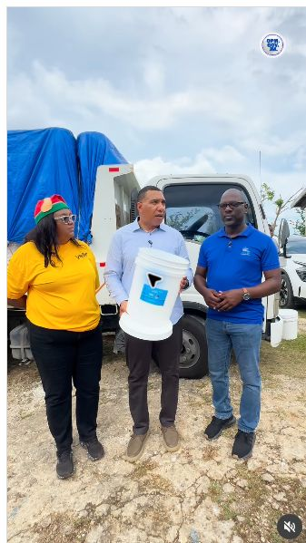
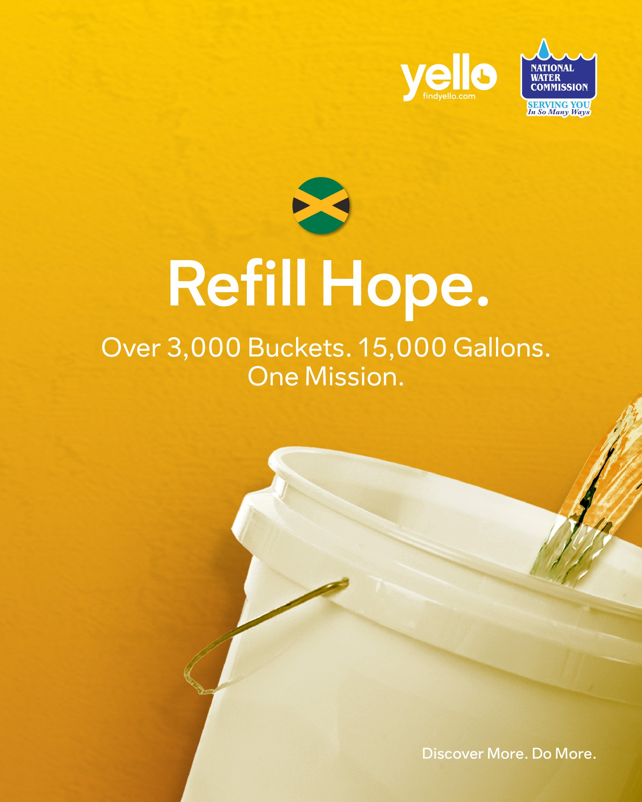
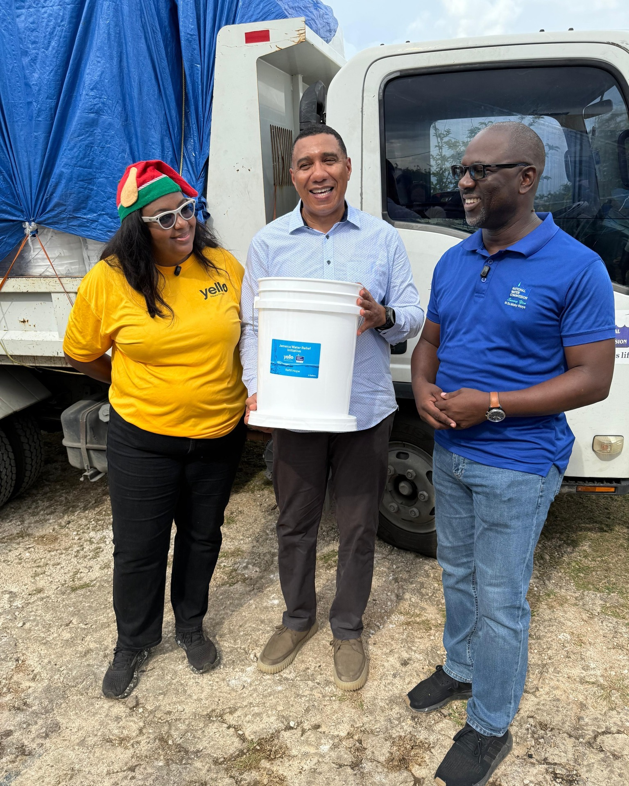
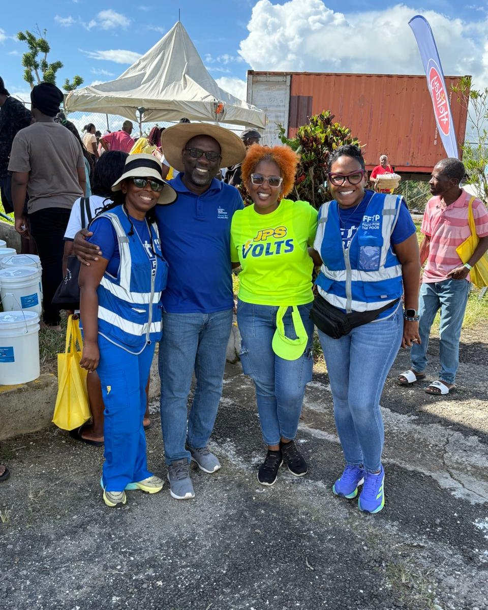

Prime Minister Andrew Holness reel
A campaign collaboration featuring the Prime Minister, FindYello and the National Water Commission.
Open original postCause Marketing / Campaign
Yello campaign storytelling for a community water initiative
Films and updates from the campaign. Select a card to open the original post on Instagram.

A campaign collaboration featuring the Prime Minister, FindYello and the National Water Commission.
Open original post
Published campaign artwork introducing the partnership and its stated water-relief scale.
Open original post
NWC and Yello’s photo update from the Middle Quarters community event.
Open original post
A community update from Ramble, Hanover.
Open original postSum of six posts, including a crosspost, published 12 Dec 2025–12 Jan 2026. Historical snapshot, not live totals.
Source: internal campaign record, March 2026
Sum across the same six posts. This is a count of interactions, not unique people.
Source: internal campaign record, March 2026
Led Refill Hope from concept to launch for Yello, coordinating campaign content and rollout around a community water-distribution initiative with the National Water Commission.
Communicate the water-relief initiative clearly and give the campaign a consistent story across social updates.
Connect the practical need for water with campaign content people could follow and share.
Campaign concept, launch coordination and execution.
Campaign planning, creative content and rollout coordination, supported by social videos and community updates.
Campaign delivery across the stated scope.
The post links show campaign videos and community updates. Reported figures are summed from six dated posts in the March 2026 internal campaign record; they are historical reporting snapshots rather than live counters. The Office of Utilities Regulation’s NWC restoration report for 22–29 December 2025 separately documents the NWC/Yello water-distribution partnership.
Completed campaign work.
What would the next campaign build on or test differently?